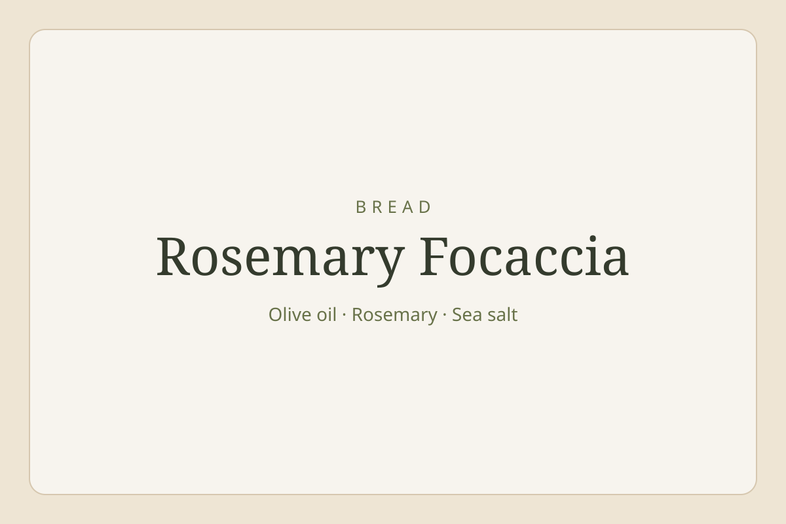

Noodles · 30 minutes
Sticky Gochujang Chicken Noodles
Glossy udon, tender chicken, crisp greens and a little heat.
30 minutes Serves 2
View recipe
Plan this week
Choose your cooking days. Get your shopping list.
Example week 2 people 5 dinners
Open meal plannerVibe cooking
Describe what you fancy and create three new meal ideas.
All recipes
47 recipes
Jack Daniel’s Glazed Chicken

Panda Express Orange Chicken

Sofritto Ragù Lasagne

Sofritto Ragù with Tagliatelle

Sticky Gochujang Chicken Noodles

Smash Cheeseburgers

Harissa Prawn Orzo

Lemon, Garlic & Oregano Chicken Traybake

Korean Style Gochujang Beef and Pork Bibimbap

Indonesian Chicken Poke Bowl

Moroccan Meatballs

Thai Curry Rice Bowl

Truffle Pasta

Creamy Pastina

Baked Ziti

Carbonara

Mediterranean Pasta Salad

Pesto Pasta Salad

Jalfrezi

Base Gravy

Pathia Curry

Moghul Curry

Slow Cooker Beef Rendang

Slow Cooker Tuscan Chicken

Slow Cooker Chicken, Chorizo & Butter Bean Stew

Slow Cooker Smoky Hot Chilli Con Carne

Ginger and Lime Chicken Noodle Soup

Satay Beef Noodles

Coconutty Caribbean Soup

Minestrone

Carrot Soup

Red Pepper Soup

Broccoli & Stilton Soup

Pea & Asparagus Soup

Nacho Cheese Sauce

Sofritto Ragu

Vinaigrette

BBQ Sauce

Panda Express Orange Chicken Sauce

Lemon Chicken Salad

Acai Bowl

Cottage Pie

Chicken Stroganoff

Creamy Garlic Chicken

Broccoli Quiche

Harissa Salmon with Crispy Potatoes & Lemon Yoghurt
No recipes found.
Try another search or choose a different category.